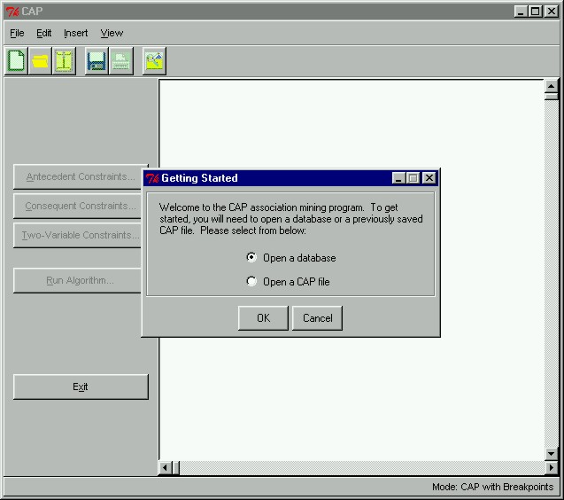

 |
CAP - Getting StartedWhen the CAP program is first started, it will ask us whether we want to read in a database or open an existing CAP constraint file. Since this is a new data mining project, we will have to read in our database. We will first open a database by selecting the option "Open a database" and clicking OK.
|